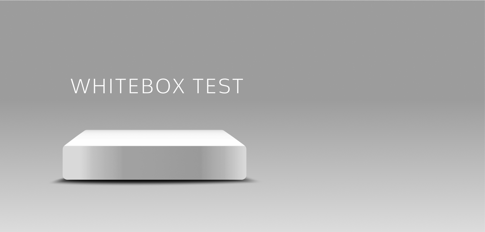
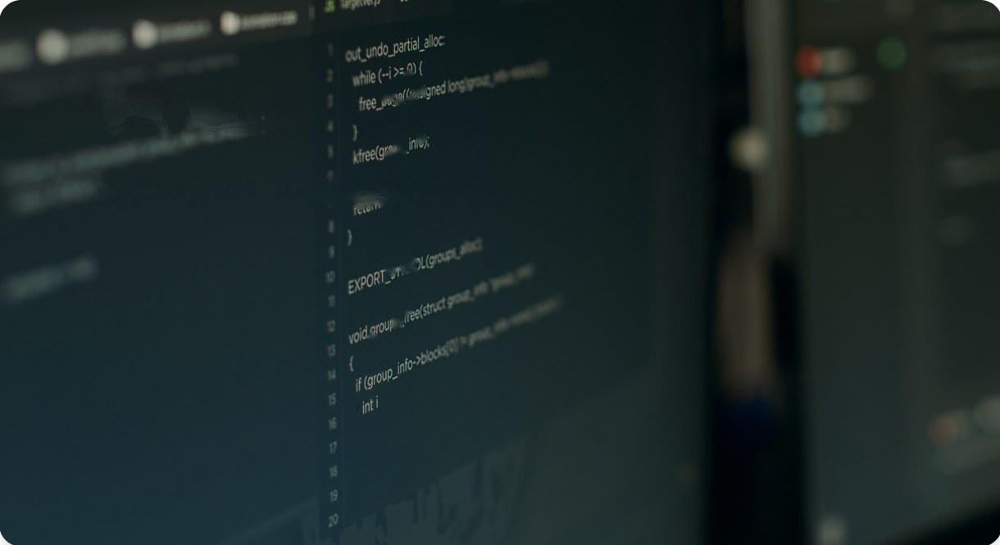

White-Box Testing
화이트박스 테스트
소스코드의 내부 구조와 동작을 직접 보면서 테스트합니다. 코드에 숨은 결함과 코딩 표준 위배를 출시 전에 찾아 안정성을 높이고 수정 비용을 줄입니다.

DEFINITION
화이트박스 테스트란?
화이트박스 테스트(White-Box Testing)는 소프트웨어의 내부 구조와 동작을 아는 상태에서, 소스코드를 기반으로 수행하는 테스트 기법입니다.
코드 검토를 비롯해 경계조건, 결정, 경로 테스트 등 대상 소프트웨어에 맞는 테스트를 수행합니다. 소스코드에 잠재된 결함과 코딩 표준 위배를 사전에 검출해 소프트웨어의 안정성을 강화하고, 오류 수정에 드는 비용을 줄일 수 있습니다.
- 한 줄 정의
- 소스코드를 직접 보며 내부 로직을 검증하는 테스트
- 방법
- 정적 테스트(실행하지 않고 검토) + 동적 테스트(실행하며 검증)
- 함께 쓰는 말
- 코드 검증, 정적 분석, 구조 기반 테스트
WHEN YOU NEED IT
이럴 때 화이트박스 테스트가 필요합니다
- 자동차·임베디드·금융처럼 높은 신뢰성이 요구되는 제품이다
- 코딩 표준을 지켰는지 객관적인 근거가 필요하다
- 기능 테스트는 통과했지만 코드 품질이 불안하다
- 출시 후 결함 수정에 드는 비용을 줄이고 싶다
SCOPE
화이트박스 테스트는 두 가지로 진행합니다
티벨의 화이트박스 테스트 전문가는 다양한 업무 영역의 경험을 바탕으로, 고객 맞춤형 도구를 활용해 정적·동적 테스트를 수행합니다.

정적 테스트Static Test
코드를 실행하지 않고 검토합니다. 코딩 규칙 점검(Coding Rule Check)과 코드 리뷰로 표준 위배와 잠재 결함을 찾고 리포트로 정리합니다.
동적 테스트Dynamic Test
코드를 실제로 실행하며 검증합니다. 경계조건, 결정, 경로 테스트 등 대상 소프트웨어에 맞는 기법으로 내부 동작을 확인합니다.
TECHNIQUES
동적 테스트에서 쓰는 대표 기법
경계조건 테스트BOUNDARY
입력값이 허용 범위의 경계에 있을 때 코드가 올바르게 처리하는지 확인합니다.
결정 테스트DECISION
조건문의 참·거짓 결과가 모두 한 번 이상 실행되도록 테스트합니다.
경로 테스트PATH
코드가 지나갈 수 있는 실행 경로를 따라가며 빠진 경로와 오류를 찾습니다.
WHY TBELL
코드 단계에서 결함을 잡으면 비용이 줄어듭니다
- 01
잠재 결함을 사전에 검출
소스코드에 숨어 있는 결함과 코딩 표준 위배를 출시 전에 찾아 소프트웨어의 안정성을 높입니다.
- 02
오류 수정 비용 절감
결함은 늦게 발견할수록 고치는 범위가 커집니다. 코드 단계에서 잡아 수정 비용을 줄입니다.
- 03
고객 맞춤형 도구 활용
다양한 업무 영역의 경험을 바탕으로 고객 환경에 맞는 분석 도구를 선택해 최상의 결과를 냅니다.
FAQ
자주 묻는 질문
화이트박스 테스트란 무엇인가요?
소프트웨어의 내부 구조와 동작을 아는 상태에서 소스코드를 기반으로 수행하는 테스트 기법입니다. 동작의 결과뿐 아니라 코드가 실행되는 과정까지 살펴봅니다.
정적 분석(정적 테스트)은 무엇인가요?
코드를 실행하지 않고 소스코드 자체를 검토해 코딩 규칙 위배, 잠재 결함, 보안 취약 패턴 등을 찾는 방법입니다. 도구를 이용한 자동 점검과 사람의 코드 리뷰를 함께 사용합니다.
블랙박스 테스트와 무엇이 다른가요?
블랙박스 테스트는 내부를 보지 않고 입력과 출력으로 기능을 검증하고, 화이트박스 테스트는 코드를 직접 보고 내부 로직을 검증합니다. 자세한 비교는 블랙박스 테스트 페이지에서 볼 수 있습니다.
어떤 제품에 특히 필요한가요?
자동차, 임베디드, 금융처럼 작은 오류가 큰 사고로 이어질 수 있어 높은 신뢰성이 요구되는 분야에서 특히 중요합니다.
코드 단계에서 결함을 잡으세요
대상 소스코드의 언어와 규모, 적용할 코딩 표준을 알려 주시면 맞는 분석 방법을 제안해 드립니다.
070-7777-9113 · 월–금 09:30–18:00 (점심 12:00–13:00)